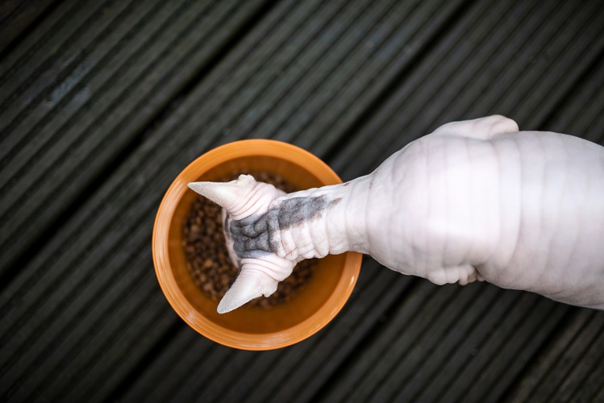
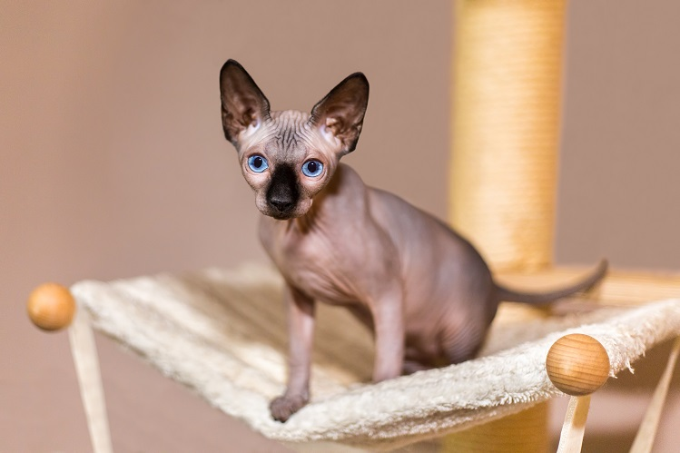

Кошки — истинные гурманы по своей природе, которые обожают вкусно покушать. Такая экзотическая кошка, как сфинкс, не исключение. Но от других кошек сфинкс отличается отсутствием шёрстного покрова. Он затрачивает больше энергии на терморегуляцию и это должно отражаться в рационе.
Расскажем самое главное о кормлении сфинксов.
У каждого хозяина питомца есть выбор: кормить натуральной пищей или готовыми промышленными кормами. У того и другого есть как плюсы, так и минусы. Однако если вы начали давать хвостатому другу «натуралку», нельзя смешивать её с готовыми кормами и наоборот. Желудок питомца подстраивается под конкретную пищу. Изменения в рационе могут привести к расстройству пищеварения.
У сфинксов нет шерсти, им нужно много энергии на обогрев организма, поэтому и корм должен быть профессиональным, подходящим для этой породы.
Хорошо, если вы будете сочетать влажный и сухой корм одного бренда в рационе. Скажем, 2 раза в день даёте влажный корм, а сухой оставляете в постоянном доступе, согласно норме кормления. Не забывайте о свежей чистой воде — она должна всегда быть на виду у кошки.
Важно соблюдать меру и не перекормить бесшёрстного товарища. Сфинксы склонны к избыточному весу, который отнимает здоровье и приносит любимцу много дискомфорта.
Нормы кормления кошек ориентировочны. Рацион сфинкса зависит от индивидуальных особенностей и вкусовых предпочтений кошки, её возраста, заболеваний, физического состояния, образа жизни. Поэтому оптимальный объём корма и частота кормления должны определяться только вместе с ветеринарным врачом. Он же порекомендует для вашей кошки подходящие именно ей линейки кормов, лакомства, витамины и прочее.
Вопрос не такой простой, как кажется на первый взгляд. В зоомагазинах большое количество товаров, среди которых есть полезные и не очень полезные корма.
Избегайте экономичных кормов на развес или в упаковках, без уверенности в качестве их состава. Красители, консерванты, усилители вкуса и прочие химикаты не прибавят здоровья ни сфинксу, ни любой другой мурлыке.
В составе хорошего корма на первом месте будет качественное мясо. Вы увидите указание, какое именно мясо используется и в каком процентном соотношении. Субпродукты — это не мясо, а отходы мясоперерабатывающей промышленности. Поэтому надпись «субпродукты», «мясные продукты» и другие неконкретные формулировки в составе корма должны вас насторожить.
Кошки хоть и уплетают дешёвый корм с удовольствием, однако не насыщаются им и через полчаса просят у хозяина добавки.
Пользы от подобного питания никакой, а вреда — с лихвой. Питаясь некачественной пищей на протяжении нескольких лет, питомец может заработать воспалительные заболевания кишечника. А чтобы всё это вылечить, потребуется немалая сумма. Поэтому лучше не испытывать судьбу, а изначально кормить сфинкса профессиональным кормом не ниже суперпремиум класса.
Даже на дорогой корм у сфинксов может возникнуть расстройство пищеварения. Организм может «бастовать» против того или иного корма. Начинаются проблемы со стулом, рвота, общее ухудшение самочувствия кошки. В этом случае важно как можно скорее показать сфинкса ветеринарному специалисту. Он обследует кошку и выявит, что именно послужило причиной такой реакции. Возможно, у вашего подопечного аллергия на определённый ингредиент в составе корма. Тогда корм придётся заменить на гипоаллергенный или монобелковый.
Смена корма происходит плавно, иначе организм может отреагировать непредсказуемо. Нужно постепенно добавлять новый корм к старому. По привычке кот будет съедать знакомый корм и оставлять в миске старый, но спустя время он его распробует.
Если новую марку сфинкс категорически не воспринимает, попробуйте вместе с ветеринарным врачом подобрать другого производителя.
В вопросе кормления сфинкса очень важно запастись терпением. Не волнуйтесь: сейчас так много хороших кормов, что вы просто обречены найти для любимца тот самый идеальный рацион.
Надеемся, что статья была для вас полезной. Заботьтесь о своих питомцах и ответственно относитесь к их питанию, ведь от этого зависит их жизнь. Если у вас возникли затруднения в вопросе кормления сфинкса, обратитесь за консультацией к ветеринарному врачу.